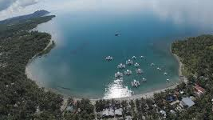
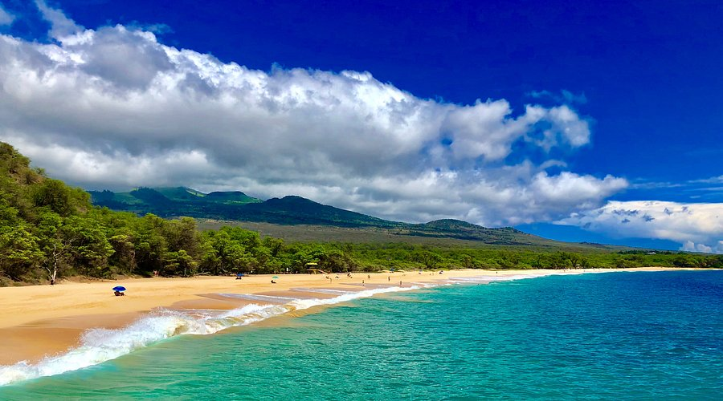
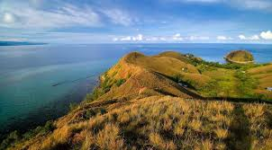

Relaxation and Leisure
Unwind in the calm beauty of Antique
Escape the rush of everyday life and discover the tranquil side of Antique. Lounge on the powdery white sands of Mararison Island and Nogas Island, where the sound of waves and stunning sunsets create the perfect setting for rest and reflection. Take a refreshing dip in the cool, crystal-clear waters of Bugang River, or enjoy a quiet picnic beside its serene banks surrounded by lush greenery.
For a more immersive experience, indulge in beachside stays and cozy homestays that offer not just comfort, but a chance to experience the warmth of Antiqueño hospitality. Enjoy slow mornings with fresh local coffee, peaceful walks along coastal villages, and afternoons spent watching the horizon. Whether it’s soaking in nature, enjoying gentle adventures, or simply doing nothing at all, Antique offers the perfect retreat for relaxation and leisure—where every moment feels calm, refreshing, and unforgettable.
RELAXATION AND LEISURE CATALOGUE
Beach Relaxation

Mararison Island (Culasi)
Activities: Sunbathing, swimming, beach walking
Highlights: White sand beaches, peaceful atmosphere, stunning sunsets

Nogas Island (Culasi)
Activities: Picnicking, light snorkeling, nature walks
Highlights: Clear waters, quiet surroundings, uncrowded beach vibes

Hurao-Hurao Island (Culasi)
Activities: Beach lounging, shell collecting, sunset viewing
Highlights: Secluded shoreline, calm waves, relaxing scenery
Rivers & Nature Retreats

Bugang River (Pandan)
Activities: Swimming, bamboo rafting, riverside picnics
Highlights: Clean turquoise waters, serene environment

Malumpati Cold Spring (Pandan)
Activities: Floating cottages, swimming, relaxing dips
Highlights: Refreshing cold water, lush forest surroundings

Tibiao River (Tibiao)
Activities: River tubing, sightseeing, nature relaxation
Highlights: Scenic river views, cool flowing waters
Resort & Stay Experiences

Beach Resorts (Pandan & Culasi areas)
Activities: Swimming, lounging, sunset dining
Highlights: Oceanfront views, relaxing ambiance, fresh seafood

Eco-Lodges & Nature Resorts (Sibalom / Tibiao)
Activities: Nature walks, birdwatching, quiet retreats
Highlights: Sustainable stays, forest surroundings, peaceful environment

Homestays in Local Communities
Activities: Relaxing stays, cultural interaction, home-cooked meals
Highlights: Warm hospitality, authentic Antiqueño lifestyle
Wellness & Slow Living

Kawa Hot Bath Experience (Tibiao)
Activities: Soaking in herbal hot baths, relaxation therapy
Highlights: Unique “kawa” bath, soothing experience, mountain setting

Yoga & Meditation by the Beach or River
Activities: Stretching, breathing exercises, meditation
Highlights: Calm environment, natural sounds, stress relief

Spa & Massage Services (Local Resorts)
Activities: Traditional massage, body relaxation, wellness treatments
Highlights: Affordable, rejuvenating, locally inspired therapies
Scenic & Leisure Activities

Sunset Viewing (Coastal Areas)
Activities: Photography, quiet reflection, strolling
Highlights: Golden skies, ocean views, peaceful ambiance

Countryside Drives & Sightseeing
Activities: Road trips, scenic stops, photo-taking
Highlights: Rolling hills, rice fields, coastal roads

Market Visits & Casual Shopping (San Jose, Pandan)
Activities: Souvenir shopping, food tasting, exploring stalls
Highlights: Local crafts, fresh produce, laid-back vibe